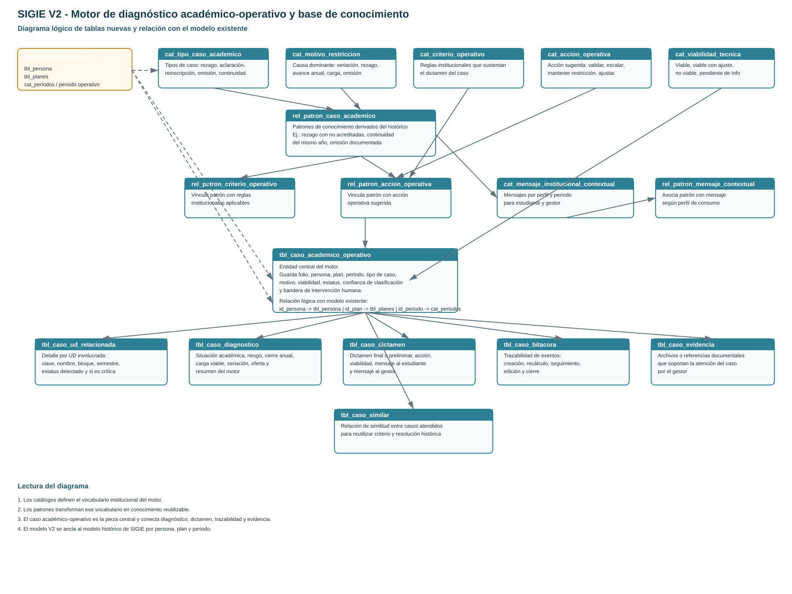

SIGIE V2 introduce una capacidad nueva en la plataforma: un motor que interpreta la situación académica, clasifica casos, genera diagnóstico, recomienda acciones y deja trazabilidad institucional. Este cambio no es solamente visual. Cambia el modo en que Historial, Malla Curricular y Asistente Curricular consumen y exponen información para estudiante y gestor.
Antes de V2, la lógica vivía principalmente en las vistas y en reglas distribuidas. Con V2 se introduce un núcleo nuevo:
En términos ejecutivos, el sistema evoluciona de una capa descriptiva a una capa resolutiva.
Se analizó el archivo casos_avance_anual_2026_2 (2).xlsx. La fuente reporta 184 casos operativos. El análisis revela una realidad importante: el histórico tiene valor, pero viene con calidad de captura irregular.
| Métrica observada en el Excel | Valor | Impacto |
|---|---|---|
| Total de casos reportados | 184 | Base real para medir cobertura |
| Casos sin “Tipo de caso” | 89 | Reduce capacidad de carga directa |
| Casos sin “Viabilidad técnica” | 60 | Obliga a inferir o a curar antes de sembrar |
| Filas donde el tipo es texto libre o resolución | Alto | Contamina la taxonomía y baja precisión |
De las 7 familias formales observables en la hoja de catálogos del Excel:
Cobertura formal explícita actual: 71.4%.
La cobertura real no se debe reportar sólo con familias nominales. Debe medirse contra los 184 tickets reales. Con esa lógica, la cobertura actual se estima así:
| Tipo de cobertura | Estimación actual | Lectura |
|---|---|---|
| Cobertura precisa | 35% a 45% | Casos en los que la respuesta ya es fina y contextualmente correcta |
| Cobertura operativa aceptable | 55% a 60% | Casos que ya reciben una orientación o dictamen útil, aunque todavía genérico |
La estrategia correcta es mixta:
Si la base se alimenta sólo conforme se atienden casos, el crecimiento será lento, inconsistente y sesgado por los casos recientes. Para llegar a una cobertura útil de corto plazo, se necesita una segunda y tercera carga curada del histórico.
| Fase | Qué se hace | Resultado esperado |
|---|---|---|
| 1. Curación inicial | Normalizar el Excel histórico y sembrar nuevos patrones, mensajes, criterios y acciones | Subir cobertura precisa a 60%-70% |
| 2. Captura estructurada al cerrar casos | Registrar tipo confirmado, motivo, viabilidad, resolución y excepción | Aprendizaje institucional acumulativo |
| 3. Gobernanza | Validar y aprobar cambios de conocimiento con un comité funcional | Consistencia y control de calidad |
Sí, pero no como primer paso absoluto.
La secuencia correcta es:
La interfaz deberá permitir:
El diagrama muestra tanto las tablas nuevas de V2 como su anclaje lógico con el modelo existente de SIGIE por persona, plan y periodo.

| Tabla | Tipo | Propósito | Relaciones |
|---|---|---|---|
| cat_tipo_caso_academico | Catálogo | Define la taxonomía principal del caso. | La usa rel_patron_caso_academico y tbl_caso_academico_operativo. |
| cat_motivo_restriccion | Catálogo | Define la causa dominante del problema. | La usa tbl_caso_academico_operativo. |
| cat_criterio_operativo | Catálogo | Formaliza las reglas institucionales que sustentan un dictamen. | La usa rel_patron_criterio_operativo. |
| cat_accion_operativa | Catálogo | Lista las acciones sugeridas por el motor. | La usan rel_patron_accion_operativa y tbl_caso_dictamen. |
| cat_viabilidad_tecnica | Catálogo | Normaliza el resultado de viabilidad del caso. | La usan tbl_caso_academico_operativo y tbl_caso_dictamen. |
| cat_mensaje_institucional_contextual | Catálogo | Define mensajes por perfil y periodo operativo. | La usa rel_patron_mensaje_contextual. |
| rel_patron_caso_academico | Conocimiento | Representa patrones reutilizables derivados del histórico. | Se relaciona con tipo de caso, criterios, acciones y mensajes. |
| rel_patron_criterio_operativo | Conocimiento | Asocia un patrón a uno o varios criterios. | Une rel_patron_caso_academico con cat_criterio_operativo. |
| rel_patron_accion_operativa | Conocimiento | Asocia un patrón a una o varias acciones sugeridas. | Une rel_patron_caso_academico con cat_accion_operativa. |
| rel_patron_mensaje_contextual | Conocimiento | Asocia un patrón con mensajes específicos por perfil. | Une rel_patron_caso_academico con cat_mensaje_institucional_contextual. |
| tbl_caso_academico_operativo | Operación | Es la entidad central del motor. Contiene folio, persona, plan, periodo, tipo, motivo, viabilidad y estatus. | Se ancla lógicamente a tbl_persona, tbl_planes y cat_periodos. De ella cuelgan diagnóstico, dictamen, bitácora, evidencia, UD relacionadas y similares. |
| tbl_caso_ud_relacionada | Operación | Guarda el detalle por UD involucrada en el caso. | Depende de tbl_caso_academico_operativo. |
| tbl_caso_diagnostico | Operación | Guarda la lectura del motor: riesgo, seriación, carga, oferta y resumen. | Relación 1:1 con tbl_caso_academico_operativo. |
| tbl_caso_dictamen | Operación | Guarda la salida resolutiva: acción, viabilidad, mensaje a estudiante y mensaje a gestor. | Depende de tbl_caso_academico_operativo y referencia acción y viabilidad. |
| tbl_caso_bitacora | Operación | Registra seguimiento y eventos del ciclo de vida del caso. | Depende de tbl_caso_academico_operativo. |
| tbl_caso_evidencia | Operación | Guarda la referencia documental que soporta la atención del caso. | Depende de tbl_caso_academico_operativo. |
| tbl_caso_similar | Operación / conocimiento vivo | Relaciona casos parecidos para reutilizar criterio y resolución. | Autorelación sobre tbl_caso_academico_operativo. |
La integración con el modelo actual no reemplaza entidades troncales. Se ancla a ellas:
| Entidad existente | Rol en V2 | Observación |
|---|---|---|
| tbl_persona | Identifica al estudiante o persona objetivo del caso | Se usa mediante id_persona en tbl_caso_academico_operativo. |
| tbl_planes | Identifica el plan de estudios del estudiante | Se usa mediante id_plan. |
| cat_periodos | Contexto temporal y de operación | Se usa mediante id_periodo y además mediante el concepto funcional de “cursamiento” o “inscripción”. |
| Servicios de trayectoria / asistente | Fuente de reglas y diagnóstico | El motor V2 no duplica toda la lógica; consume información de trayectoria ya existente y la estructura como caso. |
Este cambio representa una nueva capacidad estratégica para SIGIE: pasar de vistas informativas a un sistema con criterio operativo reusable, trazabilidad y soporte a resolución. El motor ya existe y ya opera. La oportunidad inmediata ya no está en más pantallas, sino en elevar la madurez de la base de conocimiento con nuevas cargas y una gobernanza funcional controlada.